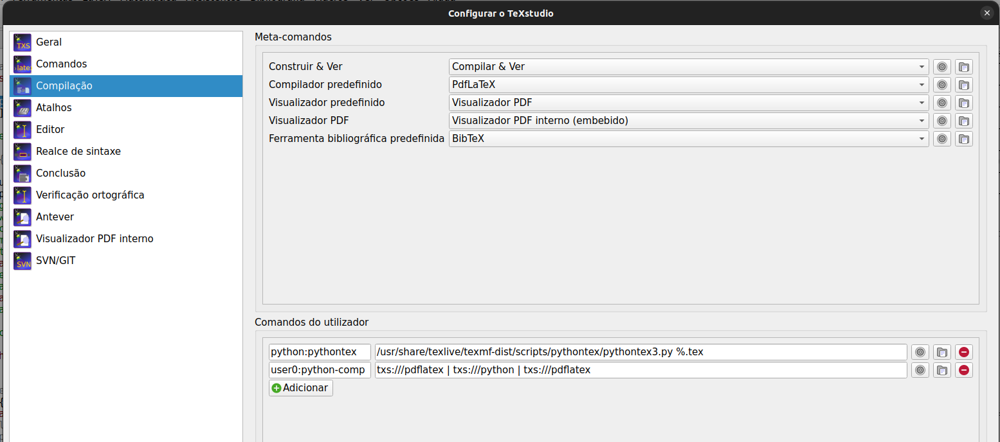

Reginaldo Demarque
Como usar Python no LaTeX
Contents
Recentemente me perguntei se poderia usar o python para gerar gabarito de provas. Eis que descobri o pythontex! Uma rápida pesquisa no google me levou ao site: A very simple introduction to using Python in Latex
Ali aprendi dicas valiosas e em poucos minutos consegui fazer o que queria. Mas tive algumas dificuldades em tornar mais prática a compilação no linux usando o TexStudio. Depois de mais pesquisas e quebrar um pouco a cabeça consegui um resultado que esta satisfatório para mim. Abaixo descrevo este processo.
Para usar o python no latex usamos o pacote \usepackage{pythontex}. No site citado acima ele dá vário exemplos para testar. Ele também ensina que para gerar o pdf com os códigos em python precisa compilar o latex no terminal da seguitne forma:
pdflatex foo.tex
/usr/share/texlive/texmf-dist/scripts/pythontex/pythontex3.py
foo.tex
Entretanto isso é muito chato, pois tem que ficar rodando 3 vezes no terminal toda hora que queremos ver o resultado. Para otimizar isso, precisamos acrescentar linhas de compilação no TexStudio.
Primeiramente, deve-se ter o Anaconda instalado no computador. E precisa abrir o TexStudio via terminal.
No TexStudio basta ir em: configurações-> compilação comandos do utilizador e acrescentar novos comandos como abaixo:

Daí, para compilar o arquivo é só ir em Ferramentas -> Utilizador e escolher o python-comp
Para facilitar ainda mais eu criei um atalho na tecla F2 para este comando.